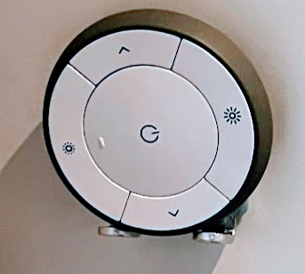
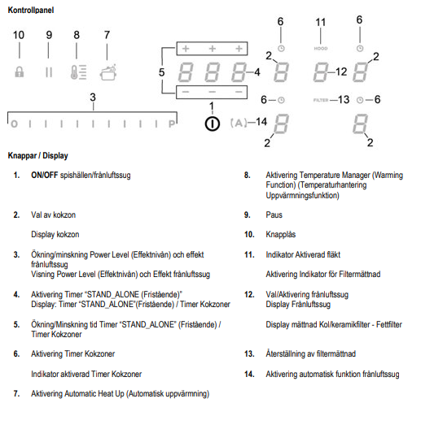
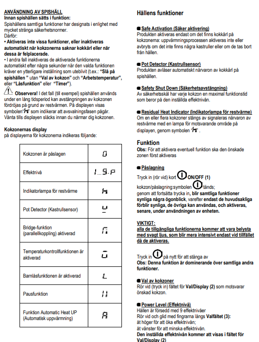
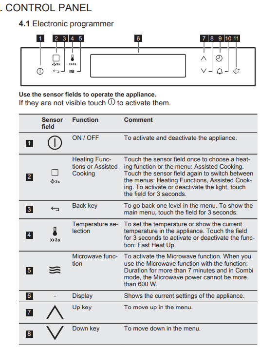
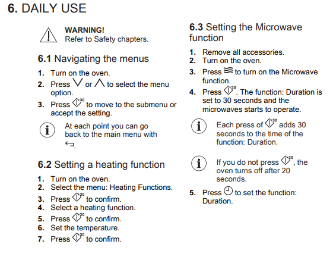
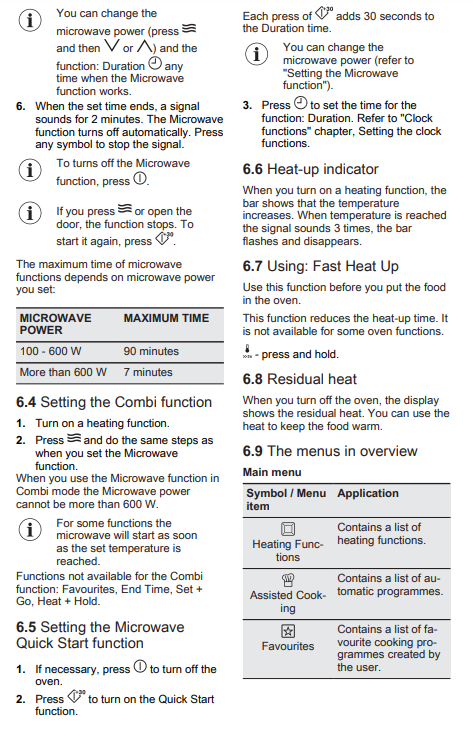
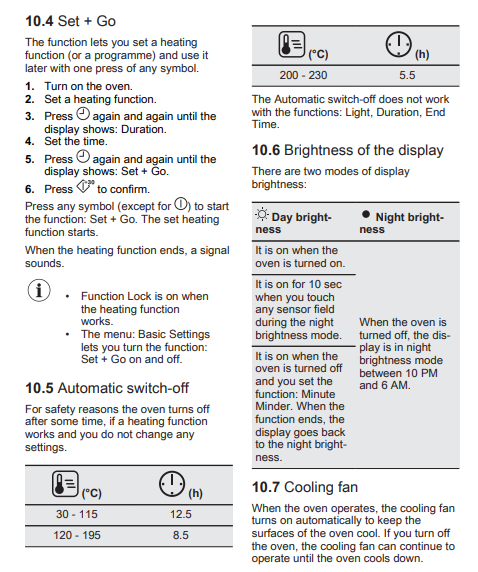
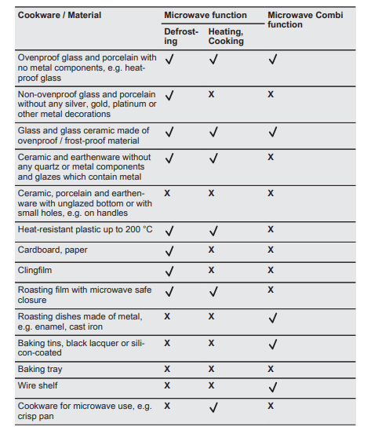

Innehållsförteckning
Innehållsförteckning
Nätverket heter = Ninni
Lösenord = krokis0910
Slå på TV:
TV:n på loftet har ingen chrome cast. om den ska använda får man flytta chrome casten från TV:n i vardagsrummet.
Dessa lampor kan styras via appen eller uttagen på väggen.
Dessa går även att dimra:
Dessa lampor kan styras via appen eller uttagen på väggen.
Via appen kan dessa dimras eller ändra ljus sken.
I vissa fall kan dessa tappa wifi kontakten, men det går alltid att använda vägguttagen.
Lamporna måste vara påslagen via vägguttagen för att appen ska fungera
Hallens taklampa går även att dimra via fjärrkontroll som sitter på sidan av hallgarderoben 
Vicka upp luckan till fläkten innan plattorna sätts igång. Om du väljer symbolen A så regleras fläkten automatiskt.


Ugnen fungerar som både mikro och ugn. Säkerställ så inte mikrolocket ligger i ugenen om ugnsfunktionerna ska användas.





Hela instruktionsboken hittar du